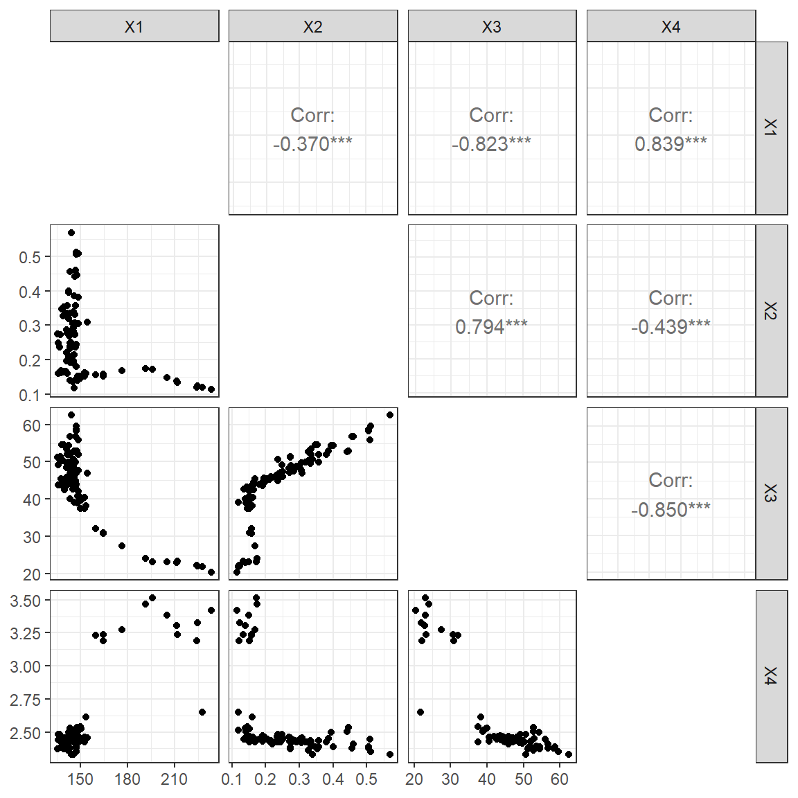

Plugging in new calibration algorithms in airGR
François Bourgin, Guillaume Thirel
1 Introduction
1.1 Scope
The Michel’s calibration strategy (Calibration_Michel()
function) is the calibration algorithm proposed in
airGR. However, other
optimization methods can be used in combination with
airGR. We show here how to
use different R packages to perform parameter estimation.
In this article, we use the GR4J model to illustrate
the different optimization strategies. In particular, we assume that the
R global environment contains input climate data, observed discharge and
functions from the Get Started
article, as shown below. Please note that the calibration period is
defined in the CreateRunOptions() function .
In order for the RunModel_*() functions to run faster
during the parameter estimation process, it is recommended that the
outputs contain only the simulated flows (see the
Outputs_Sim argument in the CreateRunOptions()
help page).
RunOptions <- airGR::CreateRunOptions(FUN_MOD = RunModel_GR4J, InputsModel = InputsModel,
IndPeriod_Run = Ind_Run,
Outputs_Sim = "Qsim")Regarding the different optimization strategies presented here, we refer to each package for in-depth information about the description of the methods used.
Please note that this article is only for illustration purposes and does not provide any guidance about which optimization strategies is recommended for the family of the GR models.
1.2 Definition of the necessary function
Parameter estimation can be performed by defining a function that takes a parameter set as input and returns the value of the performance criterion. There are two important steps: the transformation of parameters to real space and the computation of the value of the performance criterion. Here we choose to minimize the root mean square error.
The change of the repository from the “real” parameter space to a “transformed” space ensures homogeneity of displacement in the different dimensions of the parameter space during the step-by-step procedure of the calibration algorithm of the model.
OptimGR4J <- function(ParamOptim) {
## Transformation of the parameter set to real space
RawParamOptim <- airGR::TransfoParam_GR4J(ParamIn = ParamOptim,
Direction = "TR")
## Simulation given a parameter set
OutputsModel <- airGR::RunModel_GR4J(InputsModel = InputsModel,
RunOptions = RunOptions,
Param = RawParamOptim)
## Computation of the value of the performance criteria
OutputsCrit <- airGR::ErrorCrit_RMSE(InputsCrit = InputsCrit,
OutputsModel = OutputsModel,
verbose = FALSE)
return(OutputsCrit$CritValue)
}In addition, we need to define the lower and upper bounds of the four GR4J parameters in the transformed parameter space:
2 Local optimization
We start with a local optimization strategy by using the PORT
routines (using the nlminb() of the stats
package) and by setting a starting point in the transformed parameter
space:
startGR4J <- c(4.1, 3.9, -0.9, -8.7)
optPORT <- stats::nlminb(start = startGR4J,
objective = OptimGR4J,
lower = lowerGR4J, upper = upperGR4J,
control = list(trace = 1))The RMSE value reaches a local minimum value after 35 iterations.
We can also try a multi-start approach to test the consistency of the
local optimization. Here we use the same grid used for the filtering
step of the Michel’s calibration strategy
(Calibration_Michel() function). For each starting point, a
local optimization is performed.
startGR4JDistrib <- TransfoParam_GR4J(ParamIn = CalibOptions$StartParamDistrib,
Direction = "RT")
startGR4J <- expand.grid(data.frame(startGR4JDistrib))
optPORT_ <- function(x) {
opt <- stats::nlminb(start = x,
objective = OptimGR4J,
lower = lowerGR4J, upper = upperGR4J,
control = list(trace = 1))
}
listOptPORT <- apply(startGR4J, MARGIN = 1, FUN = optPORT_)We can then extract the best parameter sets and the value of the performance criteria:
parPORT <- t(sapply(listOptPORT, function(x) x$par))
objPORT <- sapply(listOptPORT, function(x) x$objective)
resPORT <- data.frame(parPORT, RMSE = objPORT)As can be seen below, the optimum performance criterion values (column objective) can differ from the global optimum value in many cases, resulting in various parameter sets.
## X1 X2 X3 X4 RMSE
## Min. :5.548 Min. :0.1240 Min. :-0.038062 Min. :-8.242667 Min. :0.7864
## 1st Qu.:5.548 1st Qu.:0.1243 1st Qu.:-0.003741 1st Qu.:-8.242667 1st Qu.:0.7864
## Median :5.548 Median :0.8866 Median : 4.478766 Median :-8.242667 Median :0.7864
## Mean :5.682 Mean :0.6325 Mean : 2.977265 Mean :-5.820890 Mean :0.9220
## 3rd Qu.:5.946 3rd Qu.:0.8866 3rd Qu.: 4.478766 3rd Qu.:-1.965413 3rd Qu.:1.1630
## Max. :5.953 Max. :0.8866 Max. : 4.478767 Max. : 0.009845 Max. :1.2235The existence of several local minima illustrates the importance of defining an appropriate starting point or of using a multi-start strategy or a global optimization strategy.
3 Global optimization
Global optimization is most often used when facing a complex response surface, with multiple local mimina. Here we use the following R implementation of some popular strategies:
3.1 Differential Evolution
3.2 Particle Swarm
4 Results
As it can be seen in the table below, the four additional optimization strategies tested lead to very close optima.
## Algo X1 X2 X3 X4
## 1 airGR 257.238 1.012 88.235 2.208
## 2 PORT 256.840 1.007 88.126 2.205
## 3 DE 256.840 1.007 88.126 2.205
## 4 PSO 256.799 1.007 88.147 2.205
## 5 MA-LS 256.820 1.007 88.116 2.2055 Multiobjective optimization
Multiobjective optimization is used to explore possible trade-offs between different performances criteria. Here we use the following R implementation of an efficient strategy:
Motivated by using the rainfall-runoff model for low flow simulation, we explore the trade-offs between the KGE values obtained without any data transformation and with the inverse transformation.
First, the OptimGR4J() function previously used is
modified to return two values.
InputsCrit_inv <- InputsCrit
InputsCrit_inv$transfo <- "inv"
MOptimGR4J <- function(i) {
if (algo == "caRamel") {
ParamOptim <- x[i, ]
}
## Transformation of the parameter set to real space
RawParamOptim <- airGR::TransfoParam_GR4J(ParamIn = ParamOptim,
Direction = "TR")
## Simulation given a parameter set
OutputsModel <- airGR::RunModel_GR4J(InputsModel = InputsModel,
RunOptions = RunOptions,
Param = RawParamOptim)
## Computation of the value of the performance criteria
OutputsCrit1 <- airGR::ErrorCrit_KGE(InputsCrit = InputsCrit,
OutputsModel = OutputsModel,
verbose = FALSE)
## Computation of the value of the performance criteria
OutputsCrit2 <- airGR::ErrorCrit_KGE(InputsCrit = InputsCrit_inv,
OutputsModel = OutputsModel,
verbose = FALSE)
return(c(OutputsCrit1$CritValue, OutputsCrit2$CritValue))
}5.1 caRamel
caRamel is a multiobjective evolutionary algorithm combining the MEAS algorithm and the NGSA-II algorithm.
algo <- "caRamel"
optMO <- caRamel::caRamel(nobj = 2,
nvar = 4,
minmax = rep(TRUE, 2),
bounds = matrix(c(lowerGR4J, upperGR4J), ncol = 2),
func = MOptimGR4J,
popsize = 100,
archsize = 100,
maxrun = 15000,
prec = rep(1.e-3, 2),
carallel = FALSE,
graph = FALSE)The algorithm returns parameter sets that describe the pareto front, illustrating the trade-off between overall good performance and good performance for low flow.
ggplot() +
geom_point(aes(optMO$objectives[, 1], optMO$objectives[, 2])) +
coord_equal(xlim = c(0.4, 0.9), ylim = c(0.4, 0.9)) +
xlab("KGE") + ylab("KGE [1/Q]") +
theme_bw()The parameter sets can be viewed in the parameter space, illustrating different populations.
param_optMO <- apply(optMO$parameters, MARGIN = 1, FUN = function(x) {
airGR::TransfoParam_GR4J(x, Direction = "TR")
})
GGally::ggpairs(data.frame(t(param_optMO)), diag = NULL) + theme_bw()
RunOptions$Outputs_Sim <- "Qsim"
run_optMO <- apply(optMO$parameters, MARGIN = 1, FUN = function(x) {
airGR::RunModel_GR4J(InputsModel = InputsModel,
RunOptions = RunOptions,
Param = x)
}$Qsim)
run_optMO <- data.frame(run_optMO)
ggplot() +
geom_line(aes(x = as.POSIXct(InputsModel$DatesR[Ind_Run]),
y = run_optMO$X1)) +
geom_line(aes(x = as.POSIXct(InputsModel$DatesR[Ind_Run]),
y = run_optMO$X54),
colour = "darkred") +
scale_x_datetime(limits = c(as.POSIXct("1998-01-01"), NA)) +
ylab("Discharge [mm/d]") + xlab("Date") +
scale_y_sqrt() +
theme_bw()